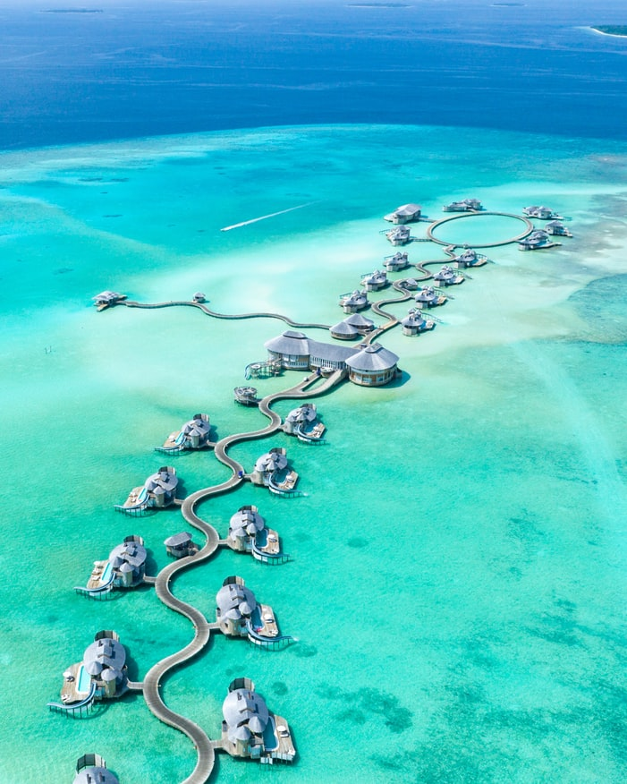

La première impression que vous garderez des Maldives sera visuelle. Au premier matin, vous serez emplis de lumière, elle est éclatante, voire éblouissante, et réparatrice. Elle vous aidera à recharger vos batteries. Vous pourrez apprécier les nuances de bleus, le turquoise profond de la mer, le bleu immaculé du ciel… Préparez vos appareils photo et immortalisez le contraste avec le blanc du sable brillant et le vert intense des cocotiers et de la végétation.

LES SPAS
La culture du spa est relativement récente aux Maldives. Elle est apparue sous l’influence des nouveaux hôtels de luxe et particulièrement sous l’impulsion de Soneva Fushi et son fameux Six Senses Spa en 1995. De nombreux clients apprécient de pouvoir allier des vacances aux Maldives avec des soins et massages au spa. Généralement, outre les massages, de nombreux soins de beauté sont disponibles.

LES BONNES TABLES
on trouve de très bonnes tables aux Maldives. La plupart des hôtels proposent un choix de plusieurs restaurants. Ce sont généralement des restaurants de spécialités, et plus les hôtels sont grands ou luxueux, plus le choix est vaste. Des chefs étoilés ont même aidé à la conception des cartes des restaurants. Pour goûter à la gastronomie des Maldives, certains restaurants proposent une sélection de plats typiques, ou organisent des soirées à thème. La cuisine typique des Maldives est composée en premier lieu de poisson, souvent du thon, et de riz. Ce sont les aliments de base, ils entrent dans la composition de tous les repas. Le poisson est préparé de plusieurs façons, bouilli ou un curry, fumé ou séché. La noix de coco est également un élément important dans la préparation. Elle sert à tous les currys, est utilisée comme boisson rafraîchissante, et pour les desserts. Enfin, le pain plat, similaire au pain indien, accompagne tous les repas. Les hôtels rivalisent de créativité pour attirer les amateurs des plaisirs de la gastronomie. C’est aux Maldives qu’a été inventé le concept du restaurant sous-marin. On peut dîner dans les arbres, sur la plage, et goûter à toutes les spécialités du monde. Dans certains hôtels, il est possible de dîner dans un restaurant différent tous les soirs. De plus, tous proposent également un grand choix de vins fins pour accompagner vos repas.
LE LUXE DES VILLAS
Préparez-vous à une explosion de luxe, d’espace et d’expériences que vous ne trouverez pas les hôtels de nos grandes métropoles. Salle de bains extérieure avec douche de plein air, piscine privée, grande terrasse avec vue panoramique, plage privée… Ce sont autant de détails qui marqueront votre séjour.
Plongée
Voyager aux Maldives, c'est aussi s'offrir des possibilités incroyables en matière de plongée sous-marine. Tropicalement Vôtre vous propose des séjours plongée sous-marine aux Maldives qui vous permettront de découvrir les spots les plus réputés de l'archipel. Au fil de vos excursions aquatiques, vous aurez l'occasion de plonger sur des barrières de corail à couper le souffle, de nager avec les raies mantas et de croiser au fil de l'eau les fameux requins baleines. Les Maldives représentent l'une des plus belles destinations de plongée sous-marine au monde.